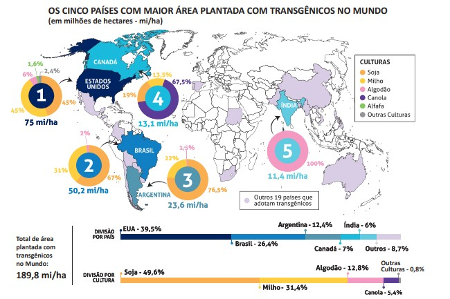

Disponível em: https://cib.org.br/wp-content/uploads/2018/06/2018.06.26. Top5_Portugues.pdf>. Acesso em: 18 Jul. 2018 (adaptado).
Considerando o infográfico apresentado, avalie as afirmações a seguir.
I.A distribuição da área plantada com transgênicos no mundo reflete o nível de desenvolvimento econômico dos países.
II.Os Estados Unidos da América possuem a maior área plantada de algodão transgênico no mundo.
III.O hemisfério norte concentra a maior área de produção transgênica.
IV.A área de produção de soja transgênica é maior no Brasil que na Argentina
A. I e II.
B. I e IV.
C. III e IV.
D. I, II e III.
E. II, III e IV.
Fonte: As questões desse simulado foram obtidas na prova disponibilizada no site do INEP - Instituto Nacional de Estudos e Pesquisas Educacionais Anísio Teixeira.
Créditos: Inep - Enade
Créditos de imagem: ENADE - Tecnologia em Logística, 2018.